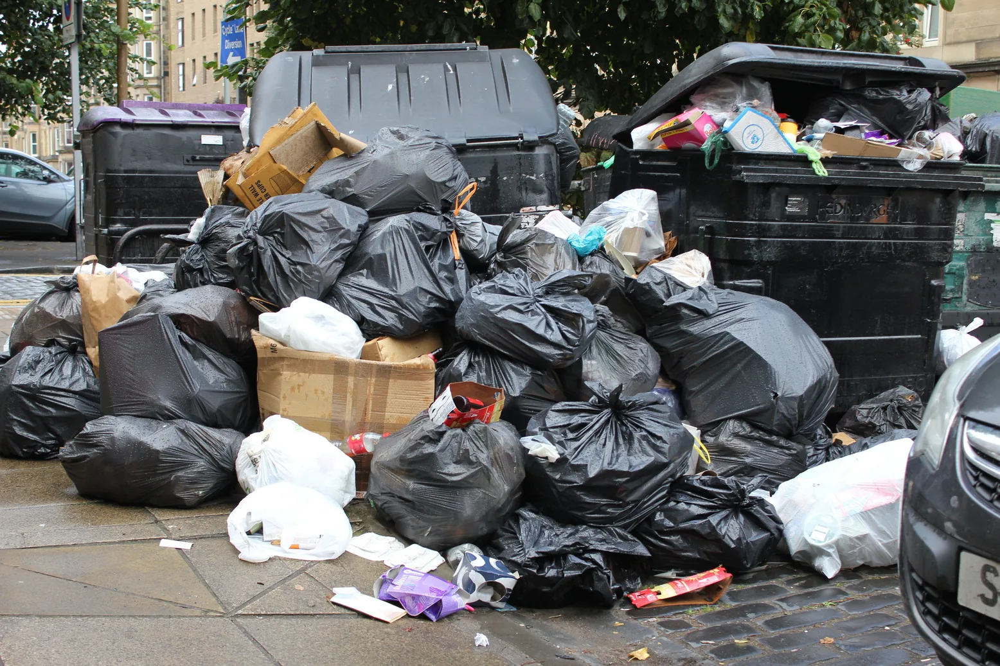
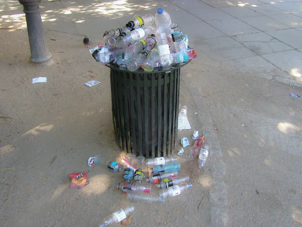
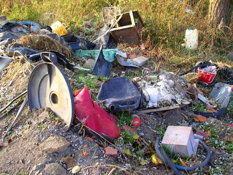
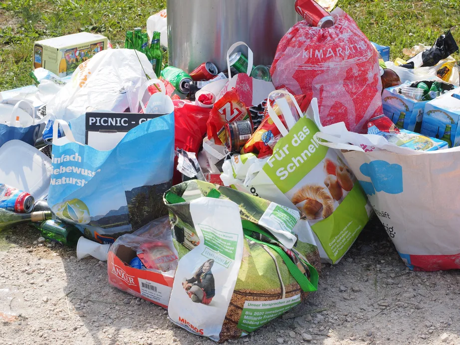

Take a Photo
Snap the uncollected garbage
Report uncollected garbage in under a minute
Report Garbage
Snap the uncollected garbage
Tell us the street or Landmark
Get a reference number and follow progress

Taft Ave. Near the Corner
Resolved
Taft Ave. beside the drain
Under Review
Taft Ave. Near the stalls
AssignedTaftClean helps citizens record the location, date, and type of unattended waste, then keep a reference number to check progress. This is a classroom prototype—not a connection to city services.